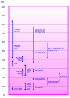

albedo

Definition: Albedo (; from Latin albedo 'whiteness') is the measure of the diffuse reflection of solar radiation out of the total solar radiation and measured on a scale from 0, corresponding to a black body that absorbs all incident radiation, to 1, corresponding to a body that reflects all incident radiation.
Source: Wikipedia
Wikipedia Page
Wikidata Page